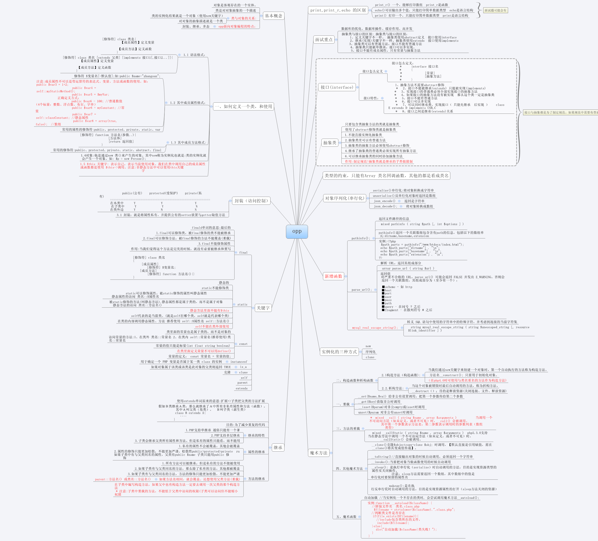

OOP的学习
OOP的学习

PDO
PHP Data Object
PDO的作用？
PDO是数据抽象层，可以通过内部切换数据库的方式，而不改变其他代码来完成php连接各个数据库的功能
DSN的概念？
Data Source Name(数据源名)
如何使用pdo连接数据库？
变量 + new + PDO（DSN,’用户名’,’密码’，array(pdo属性=>值,pdo属性=>值……)[可选]）;
使用PDO连接数据库的时候要用try{}catch(){}的方式
在PDO中获取和设置特定的属性都需要通过pdo中的系统函数来实现
1.获取
getAttribute(‘常量名称’);
2.设置
3.setAttribute(‘常量名称’,’修改值’);
PDO的错误处理方式
通过抛异常的方式去处理
报错的信息通过getMessage()来显示
通过PDO操作数据库数据的方法
1.非结果集 exec(要执行的非结果集sql语句)
2.结果集 query(要执行的结果集sql语句))
Exec返回影响的行数
Query返回一个对象，并且该对象支持数组方式的遍历，遍历的结果返回一个关联和索引都有的结果数组
如果不需要获取结果，去设置数据库的一些参数设定的时候，两个操作都是可以的
如果在进行插入数据操作的时候，想获取最后插入的ID
使用 lastInsertId();
PDO中的事务处理
1.关闭自动提交
$pdo->setAttribute(PDO::ATTR_AUTOCOMMIT,0);
2.开启事务处理
$pdo->beginTransaction();
3.进行事务处理流程
环节出现问题抛出异常并执行回滚操作
throw new PDOException(“张三转账失败”);
$pdo->rollBack();
4.没有错误则确认提交
$pdo->commit();
5.再次开启自动提交
$pdo->setAttribute(PDO::ATTR_AUTOCOMMIT,1);
PDO中的预处理